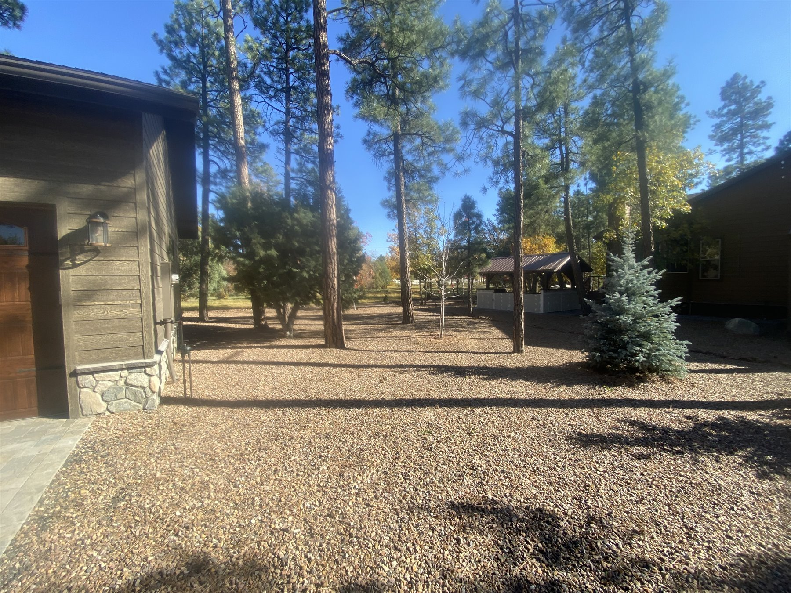

Yard cleanup
Pine needles, leaves, weeds, debris, and seasonal property cleanup.

Straightforward yard care
From pine-needle cleanup to fresh rock and recurring maintenance, our crew handles the jobs that keep White Mountains properties clean, safe, and cared for.
Pine needles, leaves, weeds, debris, and seasonal property cleanup.
Fresh decorative rock and practical ground-cover improvements.
Mowing, trimming, gutters, and recurring monthly maintenance.
Real work. Real properties.
Every property is different. We visit the site, understand what it needs, and give you a clear estimate before work begins.
 Before
Before After
AfterSimple from the start
Share your location and the work you have in mind. We will follow up within 24 hours, visit the property, and provide an estimate based on the actual job.
Start a quote requestTell us where the property is and which service you need.
We review the site before providing a price.
Once you approve the estimate, the work gets scheduled.
Chuck is very responsive, always on time, a great communicator and does excellent work in and around my yard.
— Tom Zadick
Read more customer storiesReady when you are